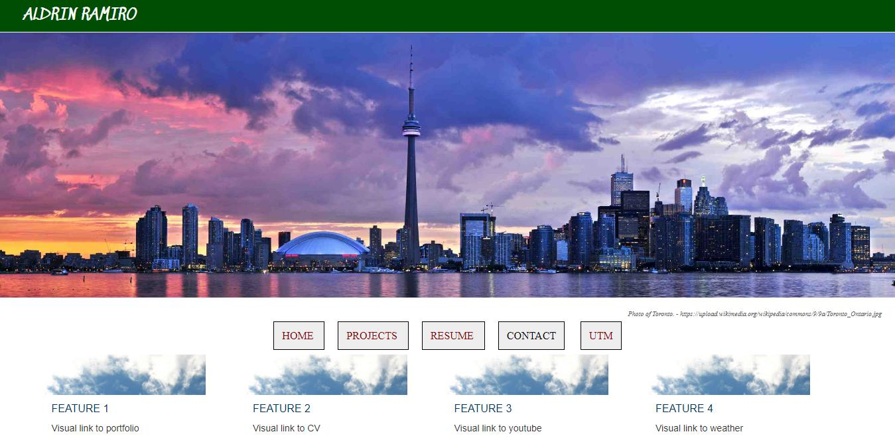
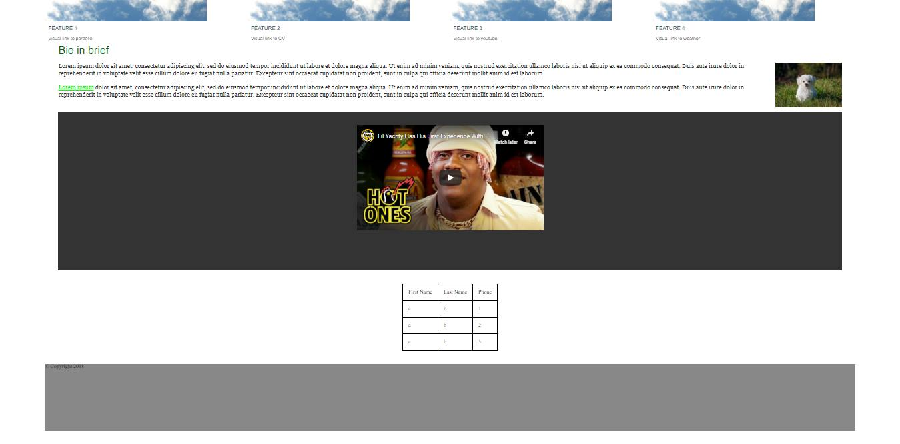
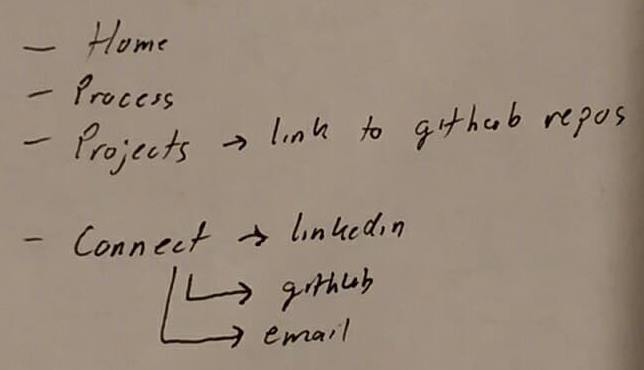
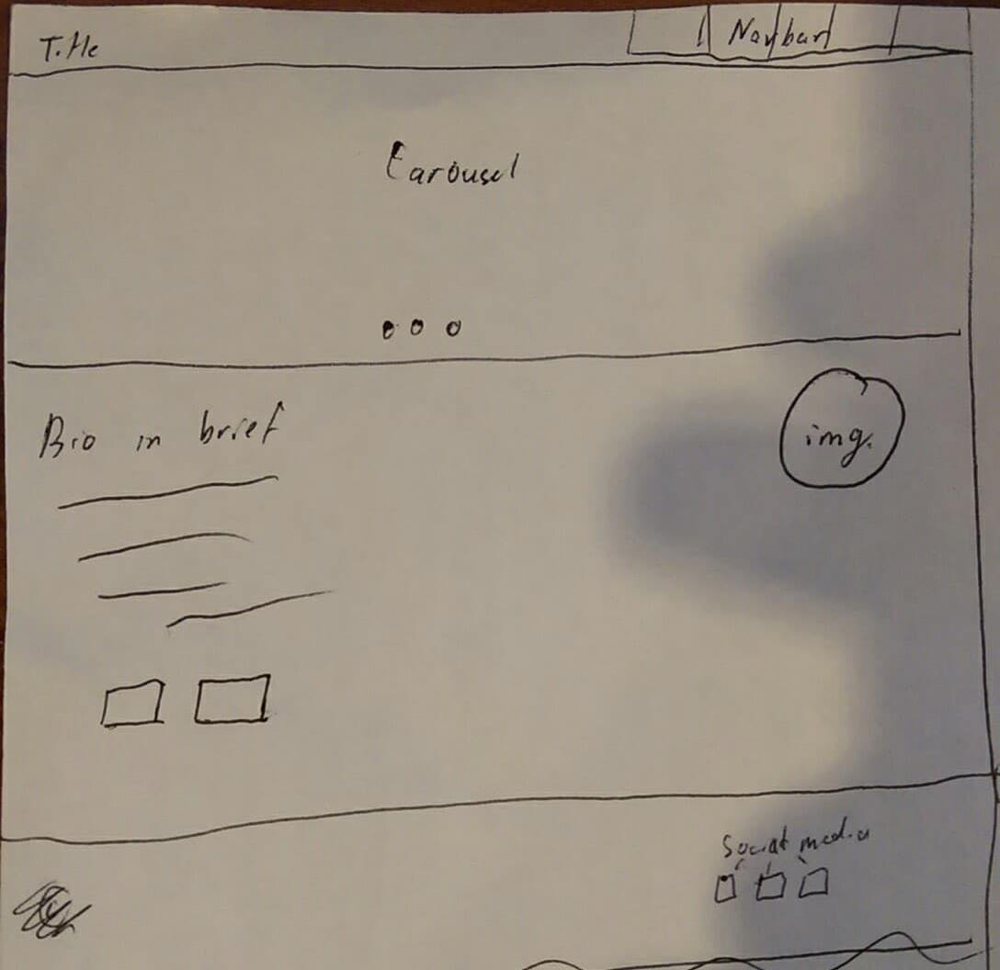
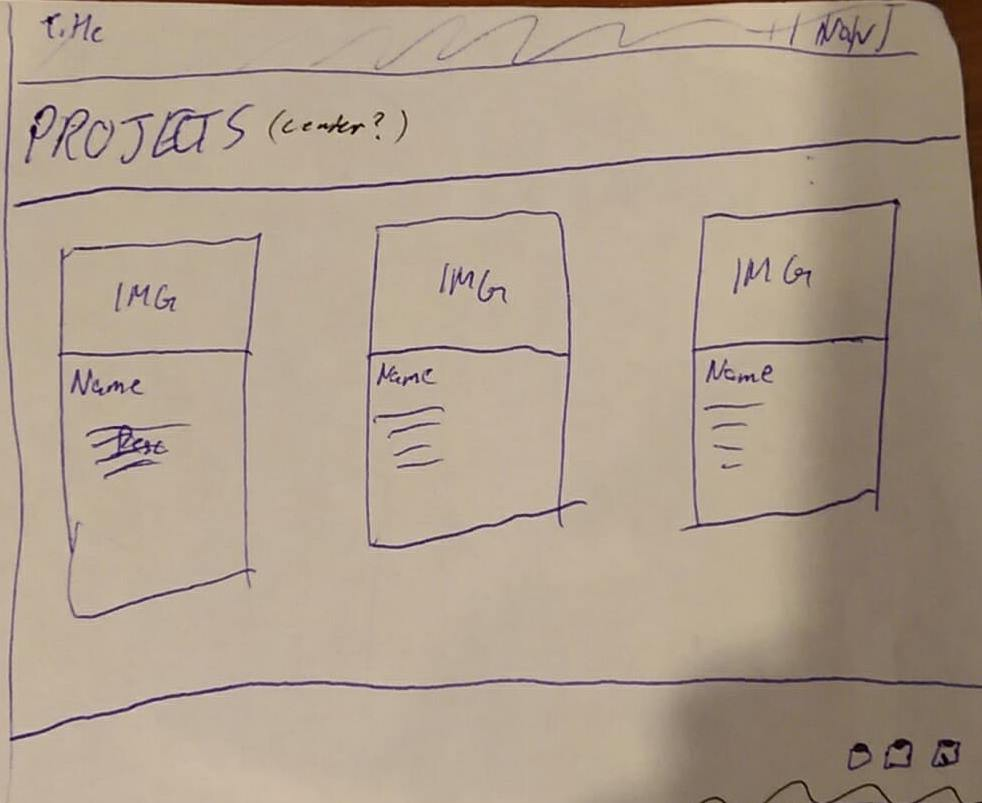
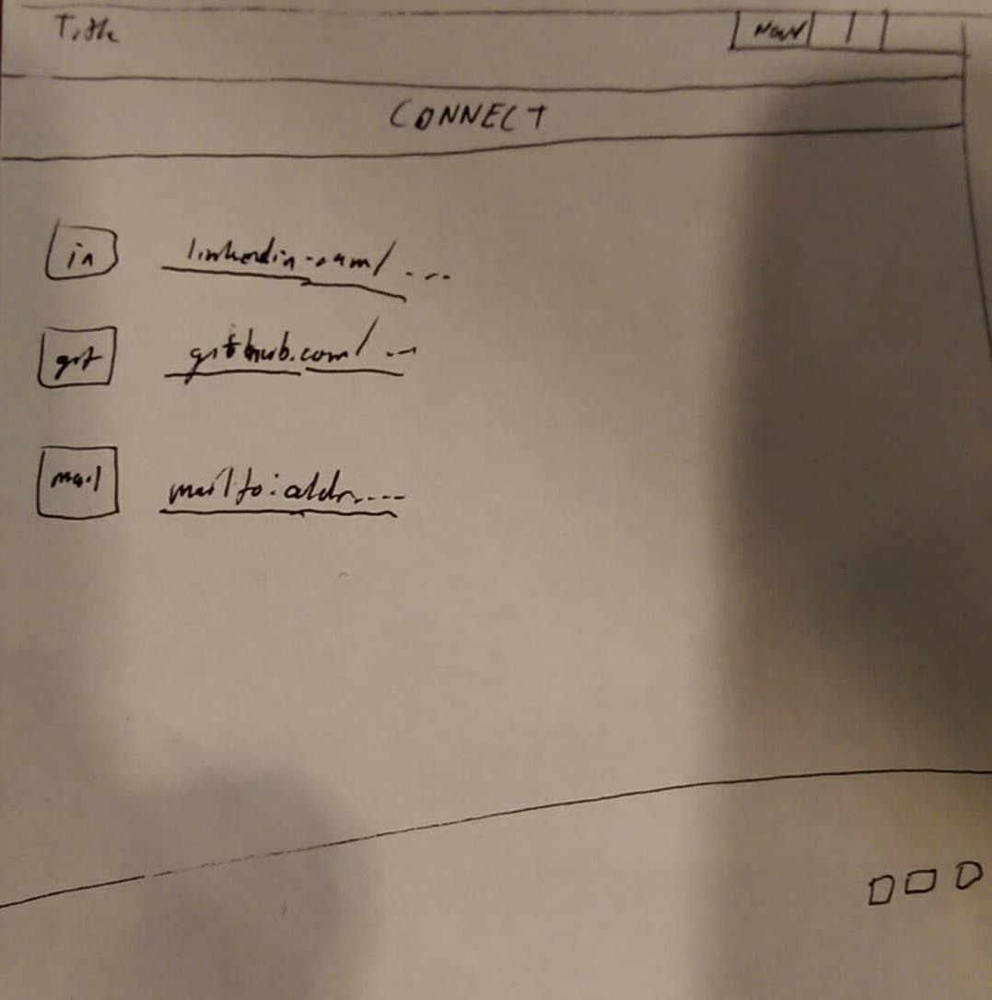

Site before the assignment:
This is how my site looked at the end of the final lab. It basically had everything we learned on one page, but did not act as a true home page.
Planning before sketching:
Before sketching layouts, I decided what pages I wanted to include in my site. Although only 3 total pages were needed, I decided to added a Connect page. Since it is supposed to be a portfolio/professional site, I thought that there should probably be a way to find my contact info.
New homepage sketch:
I wanted my new homepage to look more clean and useful. First I got rid of all the useless stuff, like the table and video. Then, instead of having a generic banner image, I decided to have a carousel to highlight other parts of the site, which also allowed me to get rid of the 4 features. Next I decided to move the navbar to the top to make the page less cluttered. Lastly, I redid the footer so it has a purpose, to link to my other social media.
Projects sketch:
I wanted to share 4 of my projects, so I decided to make 4 separate blocks for each. This allowed my to neatly display preview images and put the title and descriptions of the projects directly under them. I decided to just put a text header for the inner page, as the projects page already contained 4 images, and it would be more difficult to find a image that related to the 4 projects.
Connect sketch:
For the connections page, I wanted it to be simple and easy to understand. I decided to put icons of the social media and my name on them. I then added links to the images and text.
After creating the layouts for each page:
Sitewide:
Sitewide, I decided to change the color scheme. Previously, the header and footer were lighter colors. I decided to make them both black to improve the overall contrast of my site, making it more accessible. I also added new fonts to make my site look more modern. Lastly, I added hover effects to all the header links to make the site look nicer.
Home:
After creating the main layout for the homepage, I wanted to make it look a bit nicer. I decided to do this by making the carousel more interactive by making the image turn black and white when hovered.